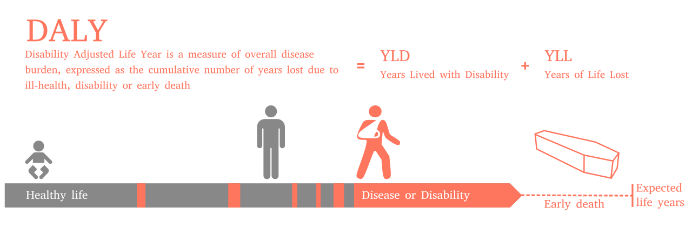
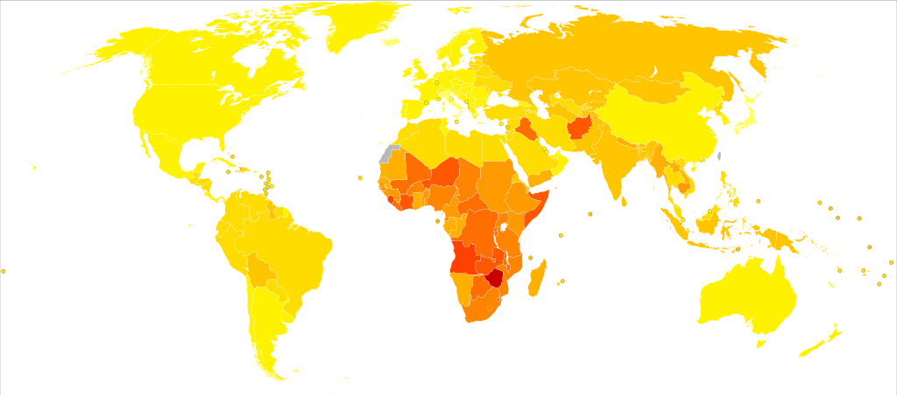
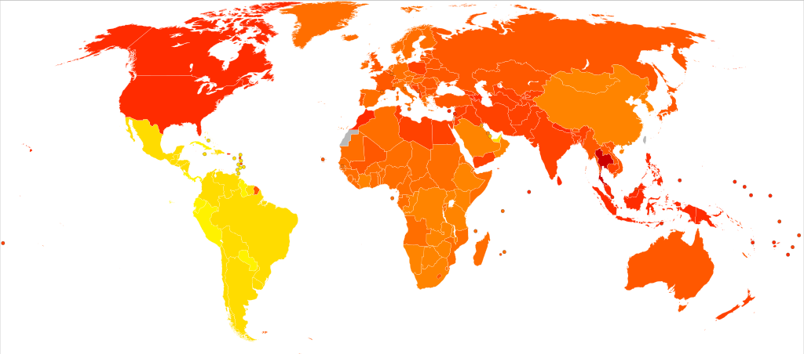
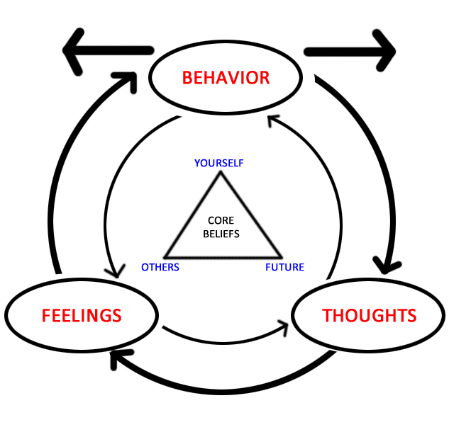

PTSD - (post-traumatic stress distorder) - zespół stresu pourazowego
Zaburzenie psychiczne z grupy zaburzeń lękowych
Powstaje na skutek traumy
Nowa jednostka chorobowa (od lat 70., po Wietnamie)
Wcześniej opisywana jako przypadłość żołnierzy (shell-shock, battle fatigue)
Rys kliniczny (wg. ICD-10)
Powstaje jako odpowiedź na silnie stresujące zdarzenie lub sytuację (krótko lub długotrwałe) o szczególnie zagrażającej, katastroficznej naturze, które może wywołać silny dystres u prawie każdego.
Rys kliniczny (wg. ICD-10) cd.
Czynniki ryzyka, takie jak niektóre cechy osobowości (kompulsywność) czy historia chorób o podłożu nerwicowym zwiększają szanse na rozwinięcie się PTSD, ale nie są konieczne.
Typowe objawy (wg. ICD-10)
Intruzywne myśli odnośnie traumatycznej sytuacji (flashbacks)
Koszmary senne
Poczucie stępienia emocjonalnego
Odseparowanie się od innych ludzi
Typowe objawy (wg. ICD-10)
Niereagowanie na bodźce ze środowiska
Anhedonia
Unikanie aktywności kojarzących się z traumą
Nadmierne pobudzenie
„Hiperczujność”
Bezsenność
Typowe objawy (wg. ICD-10) cd.
Silny lęk
Objawy depresyjne
Myśli samobójcze
Uzależnienia od alkoholu i narkotyków
Kryteria diagnostyczne (wg. ICD-10)
Silnie stresujące wydarzenie wystąpiło max. 6 miesięcy przed pojawieniem się objawów
Kryteria diagnostyczne (wg. ICD-10)
Uporczywe przeżywanie stresującego wydarzenia poprzez intruzywne myśli, koszmary senne, bardzo wyraźne wspomnienia lub przeżywanie dystresu w sytuacjach kojarzących się z traumą
Kryteria diagnostyczne (wg. ICD-10)
Unikanie sytuacji i bodźców kojarzących się z traumą (które nie występowało wcześniej)
Kryteria diagnostyczne (wg. ICD-10)
Brak możliwości przypomnienia sobie części lub całości wydarzenia traumatycznego
lub
Trwałe objawy zwiększonej psychicznej wrażliwości i pobudzenia, w tym co najmniej dwa z poniższych:
Problemy ze snem
Drażliwość i wybuchy gniewu
Podwyższona czujność (hyper-vigilance)
Przesadna reakcja na przestraszenie (startle response)
Problemy z postawieniem diagnozy
Objawy muszą wystąpić dopiero po traumie (jeśli są wcześniej, diagnoza jest kłopotliwa)
Podobne objawy w przebiegu depresji, schizofrenii, psychozy spowodowanej środkami psychoaktywnymi, OCD
Problem symulantów (renty weteranów wojennych w USA)
Czynniki ryzyka
Doświadczenie traumy:
żołnierze
ofiary katastrof
ofiary gwałtów i napaści
jeńcy wojenni
Czynniki ryzyka, cd
Bycie świadkiem traumy (ratownicy medyczni)
Dzieci do 10 r.ż. - mniejsza szansa wystąpienia PTSD
Czynniki genetyczne - ok. 30% wariancji (badania na bliźniętach walczących w Wietnamie)
Neurofizjologia - mniejsza objętość hipokampa
Metody prewencji PTSD
Debriefing psychologiczny
Trauma Risk Management (TRiM)
Wczesna terapia poznawczo-behawioralna (CBT)
Metody leczenia PTSD
Terapia poznawczo-behawioralna skoncentrowana na traumie (TFCBT)
EMDR - eye-movement desensitisation and reprocessing
Terapie desensytyzacyjne
Mindfulness
Terapie behawioralne (3 gen)
Leczenie farmakologiczne
Standard - leki przeciwdepresyjne (SSRI)
Benzodiazepiny (stosowane coraz rzadziej - kiepska współpraca w terapii, skutki uboczne i uzależnienia)
Glukokortykoidy - czasem, w celu zapobiegania procesom neurodegeneracyjnym
Inne metody leczenia
Wsparcie środowiskowe (rodzina, przyjaciele)
Arteterapia
Sport, wysiłek fizyczny
Inne metody leczenia
Epidemiologia
Dane amerykańskie: - 6,8% populacji dotknięta PTSD w którymś momencie życia - Mężczyźni 3,6%, kobiety 9,7% - U weteranów wojennych wskaźnik rośnie do 30%
Disability-adjusted life year (DALY)
DALY
DALY dla wszystkich chorób
DALY
DALY dla PTSD
DALY
Epidemiologia PTSD
Kobiety DUŻO CZĘŚCIEJ niż mężczyźni
W globalnej wariancji DALY dla PTSD udział mężczyzn jest stały (ok. 30 lat na 100 tyś mieszkańców)
Za różnice pomiędzy krajami odpowiadają kobiety (od 86 w Tajlandii do 60 w Brazylii)
Metody prewencji
Metody prewencji
Debriefing psychologiczny
Trauma Risk Management (TRiM)
Wczesna terapia poznawczo-behawioralna
Debriefing psychologiczny (CISM)
Ogólne określenie na metody wsparcia psychologicznego zaraz po wystąpieniu traumy
Najczęściej stosowana metoda - Critical Incident Stress Management (CISM)
Debriefing - pojęcie z nomenklatury wojskowej (briefing przed misją, debriefing po)
CISM - założenia
Metoda szybkiego wsparcia stosowana od 24 do 72 godzin po traumatycznym zdarzeniu
Cele:
Jak najszybszy powrót do “normalnego” życia
Zmniejszenie ryzyka wystąpienia PTSD
Terapia grupowa
Prowadzący - dowolny człowiek przeszkolony w CISM (nie tylko psycholog)
CISM - etapy
Defusing (24h po)
Debriefing (do 72h po)
Follow-up (do tygodnia po)
Defusing (rozbrojenie)
Wykonywane tego samego dnia co zdarzenie traumatyczne (zanim poszkodowany pójdzie spać)
Etap indywidualny
Zapewnienie, że przeżycia i emocje są normalne dla traumatycznej sytuacji
Informacja o niepokojących symptomach (objawach PTSD)
Informacja o miejscach, w których można uzyskać pomoc psychologiczną
Debriefing - cele
W ciągu 72h od zdarzenia traumatycznego
Umożliwia ofiarom “wygadanie się” i otrzymanie wsparcia ze strony grupy
Podpowiada sposoby radzenia sobie ze stresem
Identyfikuje osoby szczególnie zagrożone
Informuje o dostępnych sposobach wsparcia
Debriefing - etapy
Przedstawienie się prowadzącego i ofiar
Ofiary mówią o szczegółach zdarzenia ze swojej perspektywy
Ofiary mówią o swoich reakcjach emocjonalnych na zdarzenie
Dyskusja o objawach, które pojawiły się od czasu zdarzenia
Zapewnienie prowadzącego, że każdy z wymienionych objawów jest normalną reakcją na nienormalną sytuację
Nieformalna dyskusja na zakończenie
Debriefing - założenia
Uczestnictwo w procedurze może być obowiązkowe, aktywność w trakcie już nie
Prowadzący powinien zawsze obserwować osoby, które nie radzą sobie dobrze z sytuacją i oferować dodatkowe wsparcie
Sesje są poufne (z wyjątkiem sytuacji, w której uczestnik może stanowić zagrożenie dla siebie lub dla otoczenia)
Po debriefingu powinien nastąpić follow-up (w ciągu tygodnia)
Debriefing - skuteczeność
Terapia bardzo szeroko stosowana (w wielu sytuacjach, na wielu grupach)
Skuteczność niepotwierdzona
Niektóre badania wskazują na szkodliwość CISM (van Emmerik et al. 2002, Roberts et al. 2009)
APA (American Psychological Association) uznaje metody debriefingu psychologicznego za metody „niepotwierdzonej skuteczności/potencjalnie szkodliwe”
Debriefing - skuteczność
Być może problemem jest jedynie etap debriefingu, w którym ofiary się ponownie traumatyzują
Być może CISM działa jedynie na pracowników służb ratowniczych a nie na incydentalne ofiary (Jacobs, Horne-Moyer i Jones, 2004)
Trauma Risk Management - TRiM
Metoda powstała w armii brytyjskiej jako alternatywa dla nieskutecznego CISM
Adresowana dla przedstawicieli zawodów silnie narażonych na traumę
Szeroko używana w UK przez służby ratownicze, adaptowana w innych środowiskach (np. fundacje charytatywne, firmy ochroniarskie, agendy rządowe, branżę paliwową, koncerny medialne)
TRiM - model działania
W kilka dni po silnej traumie przeprowadza się wywiad z poszkodowanym
Wywiad przeprowadza jego kolega po fachu, przeszkolony w TRiM
Wywiad ma na celu wyłonienie specyficznych czynników ryzyka, które wiążą się w perspektywie z pogorszeniem zdrowia psychicznego
Nie rozmawiamy o traumatycznych wydarzeniach, tylko o symptomach obecnych u danej osoby
TRiM - model działania
Prowadzący oszacowuje ryzyko na skali punktowej wg. algorytmu
Osoby, które mają odpowiednio dużo punktów otrzymują wsparcie ze strony kolegów oraz bezpośrednich przełożonych
Po miesiącu wywiad jest ponawiany
W zależności od wyniku osoba może być kierowana na konkretną terapię
TRiM - skuteczność
Relatywnie nowa forma oddziaływania - mniej badań niż dla CISM
Badania pokazują skuteczność TRiM wśród żołnierzy, ratowników medycznych, policjantów w UK
Metody terapii
Terapia poznawczo-behawioralna skoncentrowana na traumie
EMDR - eye movement desensitisation and reprocessing
Terapie desensytyzacyjne
Mindfulness
Terapie behawioralne (3gen)
Terapia poznawczo-behawioralna (CBT) - co to takiego?
Forma psychoterapii, powstała jako narzędzie leczenia depresji
Obecnie używana w wielu zaburzeniach psychicznych, w tym PTSD
Celem jest rozwiązanie konkretnych, aktualnych problemów jednostki poprzez zmianę zachowania oraz myślenia
Stanowi kombinację metod terapii poznawczej i terapii behawioralnej

CBT - założenia
Zachowanie, procesy myślenia i procesy emocjonalne są wzajemnie powiązane
Zaburzenie powstaje jako skutek wadliwego działania jednego z tych procesów
Zachowanie ludzkie nie zawsze opiera się na racjonalnym myśleniu
Czasem może być spowodowane procesami warunkowania, na bazie których powstały nie przystosowawcze reakcje
Komponent behawioralny
Znalezienie zachowań „krytycznych” (ważnych dla problemu)
Stwierdzenie czy zachowania mają charakter deficytowy czy nadmiarowy
Ocena zachowań pod względem częstotliwości, czasu trwania i intensywności
W przypadku zachowań deficytowych – próba zwiększenia częstotliwości/czasu/intensywności
W przypadku zachowań nadmiarowych – próba zmniejszenia częstotliwości/czasu/intensywności
Desensytyzacja / ekspozycja
Metoda stosowana w leczeniu zaburzeń lękowych
Oparta na warunkowaniu klasycznym
Celem jest oduczenie pacjenta awersyjnej reakcji na bodziec lękowy, który w istocie jest bezpieczny
Ustala się hierarchię bodźców lękotwórczych od najmniej do najbardziej intensywnego
Pacjent stopniowo zaznajamia się z coraz bardziej lękowymi sytuacjami, jednocześnie stosując wyuczoną wcześniej technikę relaksacji
Komponent poznawczy
Odnalezienie i zmiana tzw. zniekształceń poznawczych – błędów w myśleniu, takich jak:
Przesadna generalizacja
Skupienie się na negatywach
Minimalizowanie pozytywów
Katastroficzne myślenie
Odnalezienie i zmiana wadliwych sposobów radzenia sobie (coping skills)
Nauka umiejętności pomagających w radzeniu sobie
Forma CBT używana w leczeniu PTSD – Cognitive Processing Therapy
Istotą PTSD są błędne przekonania o przyczynach i konsekwencjach traumy, które powodują silne negatywne emocje – strach, gniew, poczucie winy, wstyd.
Istotne jest też unikanie jako strategia radzenia sobie
Leczenie podzielone jest na trzy stadia
Forma grupowa lub indywidualna
12 50-minutowych sesji (w wersji indywidualnej)
Cognitive Processing Therapy - 1 faza
Zrozumienie istoty choroby – przedstawia się pacjentowi teorię poznawczą rozwoju PTSD
Pacjent opowiada (albo pisze) o tym, dlaczego trauma się wydarzyła i jaki miała na niego wpływ
Identyfikuje się tzw. „punkty zacięcia” – problematyczne przekonania utrudniające wyjście z choroby, np. „to moja wina”, „powinienem się bardziej postarać”, „świat jest niebezpieczny”, „nie zasłużyłem sobie na to, by być szczęśliwy”
Cognitive Processing Therapy - 2 faza
Pacjent piszę lub opowiada ze szczegółami o swojej traumie, przez co przerywa proces unikania
Celem jest odnalezienie przekonań, reakcji emocjonalnych i sposobów radzenia sobie, które są problematyczne
Terapeuta dyskutuje z pacjentem o wydarzeniu i jego reperkusjach, używając tzw. pytań sokratejskich
Pytania sokratejskie
Jakie dowody popierają to przekonanie? Jakie mu przeczą?
Jakie może być inne wytłumaczenie tej sytuacji? Dlaczego jeszcze to się stało?
Jakie są najgorsze, najlepsze, znośne i najbardziej realistyczne możliwe rezultaty?
Jakie są skutki takiego przekonania? Jakie mogą być skutki myślenia w inny sposób?
Wyobraź sobie, że twój przyjaciel/członek rodziny jest w tej samej sytuacji. Czy myślałby o niej w ten sam sposób?
Cognitive Processing Therapy - 3 faza
Praca nad umiejętnościami, pozwalającymi na zmianę wadliwych przekonań
Koncentracja na „punktach zacięcia” i sposobach ich zmiany
Koncentracja na pięciu obszarach:
Bezpieczeństwo
Zaufanie
Kontrola/władza
Samoocena
Intymność
Cognitive Processing Therapy - skuteczność
Standard w leczeniu PTSD – Cognitive Processing Therapy połączona z desensytyzacją i farmakologią (SSRI), czasem EMDR (Veterans Health Administration, USA)
Wydaje się, że terapia poznawczo behawioralna wspomagana farmakoterapią jest najskuteczniejszą znaną obecnie formą leczenia PTSD
Dyskusja dalej trwa, np. niejasna jest rola komponentów poznawczych